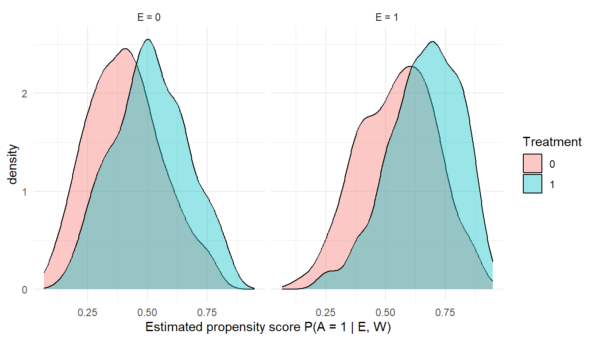

flowchart TD
A[Scientific question] --> C{One or two manipulable interventions?}
C -->|One| D[Effect modification chapter]
C -->|Two| F[Specify the four joint counterfactual means]
F --> G[Check identification and joint positivity]
G --> H[Estimate Q and g with Super Learner]
H --> I[Target the four means with TMLE]
I --> J[Compute additive and multiplicative contrasts]
J --> K[Report cell-specific risks, contrasts, diagnostics]
24 Estimating Interactions in Real-World Evidence Research
Estimated reading time: 30 minutes
Learning objectives
- Distinguish causal interaction from effect modification, and say which one needs a joint intervention
- Define the four joint-exposure cells and the additive interaction contrast built from them
- State what joint positivity requires, and check it before estimating
- Estimate an interaction contrast with TMLE and interpret its confidence interval
If you only read one thing
A causal interaction is about a joint intervention on two exposures, summarized by the additive interaction contrast \(\psi_{\text{add}} = p_{11} - p_{10} - p_{01} + p_{00}\), the extra events per patient beyond what the two effects would produce separately. Estimate it with targeted maximum likelihood estimation (TMLE) across the four joint-exposure cells, and check joint positivity first: those four cells are smaller than the margins, so overlap fails for an interaction long before it fails for a single exposure.
Key takeaways
- Interaction (two exposures acting jointly) is a different scientific question from effect modification (one treatment whose effect varies across a baseline variable, the subject of Chapter 23), and it needs a different estimand.
- The same data can show interaction on the additive scale and none on the multiplicative scale, or the reverse. Pre-specify the scale that matches the decision, and report both.
- A regression product term is rarely the scientific target. Define the four joint-exposure risks and contrast them.
- Positivity is harder in joint exposure cells than for either exposure alone. Diagnose overlap within each cell before trusting an estimate.
- Targeted learning (Super Learner plus TMLE) gives flexible nuisance estimation, a doubly robust point estimate, and influence-function inference for the contrasts you report.
24.1 Why interaction matters in real-world evidence
A single average treatment effect is rarely the end of a clinically useful analysis. Two follow-up questions almost always arise. Does the effect differ across patient groups? And do two exposures combine in ways that one alone would not predict? Both are about interaction in a broad sense, but they are not the same question, and the methods that answer them are not identical.
In real-world evidence studies, interaction questions arise because exposures rarely occur one at a time. A patient with chronic hepatitis B infection may also have diabetes, obesity, kidney disease, or a lipid disorder. Some conditions look harmful in isolation; others look neutral or even protective once you adjust for the rest. The scientific question is then whether combinations of conditions create more excess risk than you would expect from each condition on its own. The same problem appears in co-medication studies: a drug may have one safety profile when used alone and a different profile when taken with another medication. Under the target trial interpretation of Chapter 5, the joint exposure pattern corresponds to a hypothetical intervention that sets both exposures at once, and the interaction parameter is the contrast between that joint intervention and the sum of the two single-exposure interventions.
Scope of this chapter, and where effect modification lives
This chapter is about causal interaction: the joint effect of two manipulable exposures \(A\) and \(E\), and the four counterfactual worlds in which \((A, E)\) is set to \((0,0)\), \((0,1)\), \((1,0)\), and \((1,1)\). When only one variable is a treatment and the second is a baseline characteristic such as age, sex, frailty, or a genotype, the question is effect modification: heterogeneity of one treatment’s effect across levels of a modifier \(M\) (Tyler J. VanderWeele 2009). That question, its estimands (the conditional average treatment effect and contrasts of subgroup-specific effects), and its discovery tools (TMLE within prespecified subgroups, causal forests, treatment-effect variable importance) are covered in Chapter 23 and are not repeated here. If the second variable is not itself assigned or conceptualized as an intervention, do not call the estimand a causal interaction.
Two further ideas are routinely conflated with each other. Additive interaction asks whether the joint effect departs from the sum of the individual effects on the absolute risk scale. Multiplicative interaction asks whether it departs from the product of the individual effects on the relative-risk scale. The same data can show interaction on one scale and none on the other. A cohort study may find that an antihypertensive halves stroke risk in low-risk patients (relative risk 0.5) and also halves it in high-risk patients (relative risk 0.5). On the multiplicative scale there is no interaction. On the additive scale the absolute risk reduction is much larger in the high-risk group, and that is what determines who should be treated first. Public health and clinical decisions almost always depend on absolute differences rather than ratios (Tyler J. VanderWeele and Knol 2014; Basten, Riley, and Debray 2025).
Interaction estimates are what turn “treatment works on average” into “treat these patients first,” and they carry the etiologic information in joint-exposure questions such as environmental tobacco smoke and occupational asbestos, or a drug’s safety profile in patients with versus without a baseline comorbidity. So the rest of this chapter takes care over the estimand, the scale, and the uncertainty. The growth of TMLE in observational epidemiology, documented in a 2023 systematic review (Smith et al. 2023), is steepest in pharmacoepidemiology and comparative effectiveness work, the settings where these questions are most common.
24.2 From scientific question to causal estimand
The most common mistake in interaction analysis is to start with a model. The right starting point is to write down the quantity you want to estimate in counterfactual language, before any software is opened. Product-term coefficients from logistic, log-binomial, or Cox regressions are model parameters. They are not automatically the causal estimand you care about.
24.2.1 Joint interventions and four counterfactual means
Suppose two binary exposures \(A\) and \(E\) can each be intervened on, and let \(Y^{a,e}\) denote the potential outcome under the joint intervention setting \(A=a\) and \(E=e\). There are four such counterfactuals, \(Y^{0,0}\), \(Y^{0,1}\), \(Y^{1,0}\), \(Y^{1,1}\). Write \(p_{ae} = E[Y^{a,e}]\) for the marginal mean under the joint intervention. Every additive and multiplicative interaction summary below is a function of those four numbers. They are parameters of the data-generating distribution, not coefficients of any model. Following the targeted-learning principle that the parameter is defined before the estimator (Petersen and Laan 2014; Laan and Rubin 2006), any modeling choice (logistic, log-binomial, TMLE, g-computation) is a means to estimate functions of \(p_{00}, p_{10}, p_{01}, p_{11}\), not a substitute for their definition.
24.2.2 Additive interaction on the risk scale
The simplest additive-scale interaction parameter is the interaction contrast on absolute risks, in events per patient:
\[\psi_{\text{add}} \;=\; p_{11} - p_{10} - p_{01} + p_{00}.\]
Equivalently, \(\psi_{\text{add}}\) is the difference between the effect of \(A\) when \(E=1\) and the effect of \(A\) when \(E=0\):
\[\psi_{\text{add}} \;=\; \big(p_{11} - p_{01}\big) \;-\; \big(p_{10} - p_{00}\big).\]
\(\psi_{\text{add}} = 0\) means the absolute effect of \(A\) is the same whether \(E\) is set to \(0\) or \(1\). Positive values indicate super-additivity: the joint exposure produces more events per person than the two single-exposure effects would predict on their own (Tyler J. VanderWeele and Knol 2014; Knol and VanderWeele 2012).
24.2.3 RERI on the relative-risk scale
When risk ratios are the natural summary, the relative excess risk due to interaction carries the additive idea over to ratio form. Taking \((A=0, E=0)\) as the joint reference category and writing \(RR_{ae} = p_{ae}/p_{00}\),
\[\text{RERI} \;=\; RR_{11} - RR_{10} - RR_{01} + 1.\]
\(\text{RERI} = 0\) corresponds to no additive interaction; positive values indicate that the joint exposure produces more risk than the sum of the two individual excess risks. Two derived summaries introduced in Rothman’s early work on biologic synergy (Rothman 1976) are the attributable proportion due to interaction, \(\text{AP} = \text{RERI}/RR_{11}\), and the synergy index, \(S = (RR_{11} - 1)/[(RR_{10} - 1) + (RR_{01} - 1)]\). Both are interpretable only when both exposures raise risk (\(RR_{10} > 1\) and \(RR_{01} > 1\)); if either exposure is preventive, recode so the lowest-risk stratum is the reference before computing them (see Section 24.5).
24.2.4 Multiplicative interaction as a secondary scale
Multiplicative interaction asks whether the joint risk ratio departs from the product of the two marginal risk ratios:
\[\psi_{\text{mult}} \;=\; \dfrac{RR_{11}}{RR_{10} \cdot RR_{01}}.\]
\(\psi_{\text{mult}} = 1\) means the joint risk ratio is exactly the product of the marginals. Multiplicative interaction is a useful complement when the scientific question is itself ratio-based or when the result has to sit alongside ratio-scale literature. It is rarely the right starting point for decision-making, where the additive scale answers “how many additional events?” directly.
| Question | Estimand | Formula | Plain-English reading |
|---|---|---|---|
| Do two joint interventions combine super-additively on the risk scale? | Additive interaction contrast | \(\psi_{\text{add}} = p_{11} - p_{10} - p_{01} + p_{00}\) | “Joint exposure produces \(\psi_{\text{add}}\) additional events per person beyond what the two effects would predict separately” |
| Do they combine super-additively on the relative-risk scale? | RERI | \(\text{RERI} = RR_{11} - RR_{10} - RR_{01} + 1\) | “Excess risk ratio once the two single-exposure excess risks are subtracted” |
| Do they combine multiplicatively? | Multiplicative interaction | \(\psi_{\text{mult}} = RR_{11} / (RR_{10} \cdot RR_{01})\) | “The joint RR is \(\psi_{\text{mult}}\) times the product of the marginals” |
A toy example: computing interaction by hand
Suppose the four counterfactual risks are known exactly:
| \(E=0\) | \(E=1\) | |
|---|---|---|
| \(A=0\) | \(p_{00} = 0.05\) | \(p_{01} = 0.11\) |
| \(A=1\) | \(p_{10} = 0.09\) | \(p_{11} = 0.22\) |
The effect of \(A\) when \(E=0\) is \(0.09 - 0.05 = 0.04\), four additional events per 100 people. The effect of \(A\) when \(E=1\) is \(0.22 - 0.11 = 0.11\), eleven additional events per 100 people.
- Additive interaction contrast: \(\psi_{\text{add}} = 0.22 - 0.09 - 0.11 + 0.05 = 0.07\). The combined exposure produces 7 additional events per 100 people beyond what the two component effects would add up to.
- RERI: \(RR_{10} = 1.8\), \(RR_{01} = 2.2\), \(RR_{11} = 4.4\), so \(\text{RERI} = 4.4 - 1.8 - 2.2 + 1 = 1.4\); \(\text{AP} = 1.4/4.4 \approx 0.32\); \(S = 3.4/2.0 = 1.70\).
- Multiplicative interaction: \(\psi_{\text{mult}} = 4.4/(1.8 \cdot 2.2) \approx 1.11\). The joint risk ratio is about 11% larger than the product of the two marginal risk ratios.
The same four numbers produce every standard interaction summary. TMLE’s job is to estimate those four counterfactual risks from observational data under confounding; once they are in hand, the rest is arithmetic.
There are three reasons to use this counterfactual machinery rather than read off the product-term coefficient from a logistic regression.
- The coefficient is on the wrong scale. A product term in a logistic model speaks to the odds ratio, not the risk ratio or risk difference, and odds-ratio interaction is not generally interpretable as either additive or multiplicative interaction in the public-health sense (Tyler J. VanderWeele and Knol 2014).
- The coefficient is conditional, not marginal. It describes an effect conditional on the covariates in the model. Most decision questions need the marginal contrast, averaged over the covariate distribution of the target population.
- The coefficient confounds estimation with model specification. Move one covariate in or out and the interaction coefficient can shift. A causal estimand defined from potential outcomes does not depend on whether you used a polynomial or a spline for \(W_1\).
| Feature | Additive interaction | Multiplicative interaction |
|---|---|---|
| Mathematical form | \(\psi_{\text{add}}\), or RERI | \(\psi_{\text{mult}} = RR_{11}/(RR_{10} \cdot RR_{01})\) |
| Underlying scale | Absolute risk | Relative risk |
| Best for | Public health targeting, resource allocation, number-needed-to-treat reasoning | Etiologic comparisons, ratio-style benefit-risk summaries |
| Default model | None; estimate by standardization or TMLE | Logistic, log-binomial, Cox product term |
| Coding sensitivity | High when one exposure is preventive; the lowest-risk stratum should be the reference | Lower, but still requires an explicit reference |
| Decision relevance | Direct: absolute benefit by exposure cell | Indirect: needs the baseline risk to translate into absolute benefit |
Write the estimand on a sticky note before you write the model. If you cannot describe what you are estimating in one sentence using potential outcomes, you are not yet ready to estimate it.
24.3 Design and identification
Interaction analyses inherit the standard causal assumptions of Chapter 5: consistency, exchangeability given measured confounders, positivity, and no interference unless explicitly modeled. This section covers only the issues that get harder when interaction is the target.
24.3.1 The target trial protocol for two exposures
Hernán and Robins (2016) recommend designing any RWE analysis as an emulation of a target randomized trial. For interaction work the discipline matters even more, because subgroup analyses are especially vulnerable to design errors that mimic real heterogeneity. Before any modeling decision, write down the eligibility criteria, the treatment strategies (dose, duration, initiation rules), time zero, the follow-up window and outcome definition, the censoring rules, and the causal assumptions the analysis will rely on. If any of these are decided after looking at the outcome, apparent heterogeneity can be manufactured through differential immortal time, selection, or post-hoc tuning.
Design challenges in two-drug and comorbidity-by-treatment analyses
When both exposures are drugs that patients can start at different times, the single-new-user design needs extension.
- Common time zero: the joint new-user design. Both \(A\) and \(E\) must be treatment-naive at a shared eligibility date. A patient who starts \(A\) one month before \(E\) is naive to neither at the later date. The analyst must choose between requiring near-simultaneous initiation and anchoring time zero to one drug while treating the other as a baseline or time-varying covariate. That choice determines which counterfactual the estimand corresponds to.
- Immortal time bias from co-initiation requirements. If eligibility requires that both drugs be started within a short window, the outcome-free interval before the second drug is dispensed is immortal: the patient could not have had the outcome before the second drug started without being excluded. Assigning that interval to the “jointly exposed” group inflates apparent safety in the doubly exposed cell. Anchor time zero consistently for both exposures (Hernán and Robins 2016, 2025).
- What “jointly exposed” means. Simultaneous-initiation and overlap-window definitions both index a joint intervention on \((A, E)\) and map to the four-counterfactual estimand. A design that fixes \(E\) at baseline and varies only \(A\) is effect modification, not causal interaction, and calling its result a causal interaction conflates the two questions.
- Cross-indication and polypharmacy confounding. Co-initiators may differ from single-drug users in ways the standard confounder set misses: polypharmacy indication, frailty, comorbidity burden, prescriber preference. Extend the confounder list accordingly and run the joint positivity check within each \((A, E)\) cell.
24.3.2 Interaction must be estimated on a common target population
A recurring failure mode in applied work is to compute an interaction contrast from separately matched or stratified subgroup analyses: within each level of \(E\), match treated to untreated patients, estimate the treatment effect in each matched set, and report the difference of the two as an “interaction.” The result is not generally an interpretable causal interaction, for three reasons. Each match balances covariates within its own subgroup, so the two matched populations differ from each other and the contrast is not defined on one target population. The estimand \(\psi_{\text{add}}\) averages each potential outcome over the same covariate distribution, typically the full cohort, and a difference of two separately matched effects does not. And confounding control is uneven across exposure cells, so the interaction estimate inherits the worst stratum’s failure.
The remedy is to estimate the interaction parameter directly on the full cohort, with a single adjustment specification (regression, Super Learner, or a TMLE plug-in) that targets all four counterfactual means jointly, which is what the worked example in Section 24.6 does. When inverse-probability weights or matching are part of the adjustment, build them on the full cohort with treatment defined as the joint exposure \((A, E)\). If only pre-aggregated subgroup-specific estimates are available, report each subgroup’s effect with its own confidence interval and say plainly that no interaction parameter has been identified.
24.3.3 Identification assumptions for joint-intervention interaction
Identification restates the assumptions of Chapter 5 in joint-treatment form (Hernán and Robins 2025; Petersen and Laan 2014):
- Consistency. The observed outcome under the observed exposure pair \((A, E)\) equals the corresponding counterfactual outcome \(Y^{A, E}\).
- Exchangeability for the joint treatment. Given the measured confounders \(W\), the joint exposure \((A, E)\) is independent of all four potential outcomes \(Y^{a, e}\). Exchangeability for \(A\) alone is not sufficient.
- Positivity for the joint treatment. Every covariate pattern in the target population has positive probability of every joint exposure level: \(P(A=a, E=e \mid W) > 0\) for all \((a, e) \in \{0,1\}^2\).
- A common target population. All four counterfactual means are averaged over the same distribution of \(W\).
24.3.4 Why positivity is the central threat to interaction analyses
Positivity is local: it must hold within every covariate pattern you condition on, and requiring support for a joint exposure conditions on more. For a binary \(A\) and a binary \(E\), the analysis must learn about four joint exposure states, and the number of cells grows with the product of the exposure cardinalities while the data per cell shrink. If very few patients occupy one cell, or if co-exposed patients look clinically unlike everyone else, the estimate for that state rests on extrapolation from the outcome regression.
A concrete example. Consider a 4,000-patient HIV cohort with binary \(A\) (HAART initiation), binary \(E\) (heavy alcohol use), and several binary clinical confounders. The marginal cells look reasonable:
| Cell | \(A=0, E=0\) | \(A=0, E=1\) | \(A=1, E=0\) | \(A=1, E=1\) |
|---|---|---|---|---|
| Patients | 1,800 | 600 | 1,400 | 200 |
| Outcome events | 90 | 60 | 70 | 20 |
The doubly exposed cell holds 200 patients with 20 events. Within it, the propensity for \(A\) given the clinical confounders may be near 0 for most patients (heavy drinkers are counseled against initiating HAART without adherence support). The handful of heavy drinkers who did start HAART then carry enormous inverse-probability weights and dominate the estimate, and the headline RERI can move sharply when those few patients are dropped even though the main effect of HAART stays stable. The same failure appears as a frailty-by-treatment interaction in which almost no frail patients receive aggressive therapy: within the frail stratum, no estimator can recover \(E[Y^1 \mid \text{frail}]\) from the data.
Joint positivity checklist
Before reporting an interaction estimate, verify all five:
- Cell counts overall. Inspect the number of patients in each \(A \times E\) cell.
- Cell counts within important strata. Repeat inside the covariate or modifier strata that matter for the question; a cell that is adequate marginally can collapse inside them.
- Joint propensity scores. Summarize \(\widehat g(A, E \mid W)\), or its two factor pieces, across the cohort and within strata.
- Extreme weights and near-zero probabilities. Flag observations with very small \(\widehat g\) in any cell, very large inverse-probability weights, or fitted joint probabilities compressed against 0 or 1.
- Simplify when cells are too sparse. Collapse categories, restrict the horizon, or report single-exposure effects with an explicit positivity disclaimer instead of a poorly identified interaction parameter.
Treat positivity diagnostics inside joint exposure cells as a required step, not an appendix. When the cells are sparse, no estimator, however sophisticated, can manufacture identifiability that the data do not support, which is also why collaborative TMLE (C-TMLE; Section 24.7) is worth running as a sensitivity analysis when the propensity model is fragile.
24.4 Targeted learning for interaction
Super Learner and TMLE are introduced in Chapter 11 and Chapter 10, and the cross-validated, collaborative, and adaptive variants in Chapter 12. This section assumes that material and covers only what changes when the target is an interaction.
24.4.1 What TMLE is targeting here
For interaction estimation, TMLE does not begin with a product term. It begins with the four mean counterfactual outcomes \(p_{00}, p_{10}, p_{01}, p_{11}\) under the joint exposure conditions, and \(\psi_{\text{add}}\) is a contrast of those four means. In plain English: estimate the average outcome we would see if everyone were in each of four hypothetical worlds (nobody exposed, only \(A\), only \(E\), both), then ask whether the “both exposed” world is larger than what the two single-exposure worlds would predict.
Interaction amplifies the two pathologies targeted learning was designed to fix. Model misspecification bites harder because an interaction is a difference of differences of fitted values, so small functional-form errors that are invisible in a main effect can dominate it. Positivity bites harder because the joint cells are sparser than either margin. Flexible nuisance estimation through Super Learner lets the data choose the shape of \(Q\) instead of imposing a parametric form whose interaction term is a model artifact. Double robustness keeps the estimate consistent as long as either \(Q\) or \(g\) is estimated consistently. And the targeting step removes the first-order bias that a plug-in g-computation built on flexible learners would carry, which matters when every observation in a small cell has to count.
24.4.2 From estimand to estimator
The five steps below make “estimand first, then estimator” concrete for a binary treatment \(A\) and a binary second exposure \(E\); the worked example implements them in order.
- Estimate the outcome regression \(Q(A, E, W) = E[Y \mid A, E, W]\) with Super Learner, one model on the observed data with treatment, second exposure, and confounders as predictors.
- Generate counterfactual predictions under each of the four joint regimes by querying the fitted model on modified data: \(Q(1,1,W_i)\), \(Q(0,1,W_i)\), \(Q(1,0,W_i)\), \(Q(0,0,W_i)\) for every patient.
- Average and contrast: \(\widehat{\psi}_{\text{add}} = \frac{1}{n}\sum_i [Q(1,1,W_i) - Q(0,1,W_i)] - \frac{1}{n}\sum_i [Q(1,0,W_i) - Q(0,0,W_i)]\). This is the plug-in g-computation estimate.
- Apply the TMLE update. Estimate the treatment mechanisms \(g_E(E \mid W)\) and \(g_A(A \mid E, W)\) with Super Learner, build the clever covariate for each joint regime, and update \(Q\) along the least-favorable submodel so that the targeted means \(\widehat p_{ae}^*\) solve the efficient influence-function equation.
- Inference from the influence curve. \(\psi_{\text{add}}\) is a linear contrast of four means, so its influence curve is the same linear combination of the four regime-specific influence curves, and a Wald interval follows from its empirical variance.
For most applied interaction analyses the rule is simple: estimate the nuisance functions with Super Learner using a modest library, target the four joint-regime means with TMLE, and use the influence function for inference. Escalate to CV-TMLE or drtmle only when the learner library is aggressive and the joint cells are large enough to support sample splitting (Chapter 12).
24.5 Choosing and reporting the scale
VanderWeele and Knol’s central recommendation (2014) is to report both scales whenever the outcome and data permit. Scale dependence is a substantive claim, not a methodological detail: it says how two exposures combine to produce risk.
Additive interaction compares excess risks. It asks whether the combined exposure produces more cases than adding the separate risk differences would predict, which is the actionable question for public health, safety monitoring, and clinical prioritization because it maps onto cases per population unit. Multiplicative interaction compares ratios of ratios, which remains useful for etiologic questions and for placing a finding alongside ratio-based literature, but rarely tells you where intervention would prevent the most cases. For most RWE decision problems, start on the additive scale and report the multiplicative contrast alongside it; a 2-percentage-point absolute risk reduction in a high-incidence subgroup is a much larger public-health benefit than the same relative-risk reduction in a low-incidence one (Basten, Riley, and Debray 2025; Tyler J. VanderWeele and Knol 2014).
| Scale | What it tells you | Best for |
|---|---|---|
| Additive (\(\psi_{\text{add}}\), RD contrasts, RERI) | How many additional events are caused (or prevented) per person, by exposure cell | Decision-making, resource allocation, number needed to treat, policy targeting |
| Multiplicative (\(\psi_{\text{mult}}\), RR contrasts) | How much the ratio of exposed to unexposed risk changes across cells | Etiologic comparison, meta-analytic synthesis, biology |
24.5.1 Do not rank interaction estimates across exposure pairs too quickly
When a study estimates several pairwise interactions, it is tempting to conclude that the larger contrast marks the more synergistic or more important pair. Each estimate is a function of the target population over which its four counterfactual means are averaged, and different pairs define different observed support, rest on different parts of the data, and face different positivity limitations. Before ranking, confirm that the same target population, the same scale, the same follow-up and intervention definitions, and adequate support in all four cells apply to every pair. If not, report each pair with its own confidence interval and do not rank them as if they answered the same question.
24.5.2 Protective exposures require recoding
Additive summaries such as RERI and AP are not invariant to coding when an exposure is preventive. The standard formulas assume the doubly unexposed cell \((A=0, E=0)\) carries the lowest risk. When one exposure is protective (HAART initiation, vaccination, guideline-adherent therapy), applying the unmodified RERI formula can produce values that look like antagonism but are a coding artifact. The remedy is mechanical, and the interactionR package applies it automatically: recode each exposure so that the lowest-risk joint stratum is the reference category before computing additive summaries (Knol et al. 2011; Tyler J. VanderWeele and Knol 2014; Alli 2021). This is one of the most common mistakes in published RERI estimates.
Whatever scale you privilege, the most useful presentation is a cell-specific risk table, the estimated risk under each combination of exposures plus the contrasts of interest. Readers can then reconstruct any other contrast and judge whether the differences matter clinically.
24.5.3 Time-to-event outcomes: put the estimand on the cumulative-risk scale
Many RWE outcomes are time-to-event, and the default model is Cox regression with a product term. For interaction work that is the wrong default. Hazards are non-collapsible, so even an unconfounded marginal hazard-ratio interaction is not a clean function of the counterfactual hazards (Martinussen, Vansteelandt, and Andersen 2018; Aalen, Cook, and Røysland 2015). Hazards condition on survival, so a hazard-ratio interaction mixes a treatment-by-exposure effect with a time-varying selection effect. And a model that is multiplicative on hazards is nonlinear on cumulative incidence, so a hazard-scale interaction does not map onto \(\psi_{\text{add}}\), RERI, AP, or \(S\).
Define and target an interaction parameter on the cumulative-risk scale at a clinically meaningful horizon \(t^*\) instead. The four counterfactual cumulative incidences \(F^{a,e}(t^*) = P(T^{a,e} \le t^*)\) populate the same \(2 \times 2\) table as the binary-outcome case, and \(\psi_{\text{add}}\) and RERI follow from them; restricted mean survival time \(E[\min(T^{a,e}, t^*)]\) gives an additive contrast in event-free time. Each can be estimated with a TMLE that targets the counterfactual survival function directly (survtmle, concrete, ltmle, or lmtp with survival nodes), and Chapter 26 walks through that machinery. A Cox product term is fine as a sensitivity analysis or an exploratory description. The headline interaction estimate belongs on the cumulative-risk scale with an explicit horizon, because the same data at one, two, and five years can give materially different interaction conclusions.
24.6 Worked example: two binary exposures with TMLE and Super Learner
This example runs the workflow on a simulated cohort with a binary treatment \(A\), a binary second exposure \(E\), a binary outcome \(Y\), and three baseline confounders. The data-generating mechanism includes a real additive-scale interaction, and because it is known, the true \(\psi_{\text{add}}\) can be computed for comparison. The analysis proceeds in two layers: a transparent plug-in g-computation that makes the four-counterfactual-means logic visible, then the TMLE update and influence-curve inference.
library(dplyr)
set.seed(2026)
n <- 2000
W1 <- rnorm(n) # continuous confounder
W2 <- rbinom(n, 1, 0.4) # binary confounder
W3 <- runif(n, -1, 1) # bounded confounder
# Second exposure depends on the confounders
E <- rbinom(n, 1, plogis(-0.2 + 0.7 * W1 - 0.4 * W2))
# Treatment depends on the confounders and on the second exposure
A <- rbinom(n, 1, plogis(-0.1 + 0.8 * W1 + 0.5 * W2 - 0.3 * W3 + 0.2 * E))
# Outcome with a genuine additive-scale interaction between A and E
risk <- function(a, e) plogis(-2.0 + 0.8 * a + 0.4 * e + 0.9 * a * e +
0.7 * W1 - 0.5 * W2 + 0.3 * W3)
Y <- rbinom(n, 1, risk(A, E))
dat <- data.frame(Y, A, E, W1, W2, W3)
# The truth, available only because we simulated the data
p_true <- c(p00 = mean(risk(0, 0)), p10 = mean(risk(1, 0)),
p01 = mean(risk(0, 1)), p11 = mean(risk(1, 1)))
psi_add_true <- unname(p_true["p11"] - p_true["p10"] - p_true["p01"] + p_true["p00"])
table(A = dat$A, E = dat$E)
#> E
#> A 0 1
#> 0 638 316
#> 1 530 516All four joint exposure cells are well populated, so the joint positivity check passes at the cell-count level; the propensity-score version of the check follows the estimates.
24.6.1 Layer 1: plug-in g-computation with Super Learner
Steps 1 to 3 of the mapping in Section 24.4.2: fit one outcome regression with Super Learner, predict under each of the four joint regimes, and average.
library(SuperLearner)
X <- dat[, c("A", "E", "W1", "W2", "W3")]
Q_fit <- SuperLearner(Y = dat$Y, X = X, family = binomial(),
SL.library = c("SL.mean", "SL.glm",
"SL.glm.interaction", "SL.earth"),
cvControl = list(V = 5))
predict_under <- function(a, e) {
predict(Q_fit, newdata = transform(X, A = a, E = e))$pred
}
Q11 <- predict_under(1, 1); Q10 <- predict_under(1, 0)
Q01 <- predict_under(0, 1); Q00 <- predict_under(0, 0)
p_plugin <- c(p00 = mean(Q00), p10 = mean(Q10), p01 = mean(Q01), p11 = mean(Q11))
psi_add_plugin <- unname(p_plugin["p11"] - p_plugin["p10"] - p_plugin["p01"] + p_plugin["p00"])
psi_mult_plugin <- unname((p_plugin["p11"] / p_plugin["p01"]) / (p_plugin["p10"] / p_plugin["p00"]))
round(Q_fit$coef, 3)
#> SL.mean_All SL.glm_All SL.glm.interaction_All
#> 0.000 0.347 0.653
#> SL.earth_All
#> 0.000SL.glm.interaction (a logistic regression with all pairwise product terms) takes most of the ensemble weight, which is what one would hope on data generated with a product term; the point of the library is that you do not have to know that in advance.
24.6.2 Layer 2: the TMLE update and influence-curve inference
Steps 4 and 5. No single package exposes a turnkey “interaction parameter,” but ltmle accepts two intervention nodes at one time point, so each of the four joint regimes can be targeted separately and the four targeted means and their influence curves combined. Node order must follow the factorization \(P(E \mid W)\,P(A \mid E, W)\): \(E\) is drawn from \(W\) and \(A\) from \((W, E)\), so \(E\) precedes \(A\) in both the column order and Anodes.
library(ltmle)
ltmle_dat <- dat[, c("W1", "W2", "W3", "E", "A", "Y")]
run_regime <- function(a, e) {
ltmle(data = ltmle_dat, Anodes = c("E", "A"), Ynodes = "Y",
abar = c(e, a), # order matches Anodes
SL.library = c("SL.mean", "SL.glm", "SL.glm.interaction"),
estimate.time = FALSE)
}
fit_11 <- run_regime(1, 1); fit_10 <- run_regime(1, 0)
fit_01 <- run_regime(0, 1); fit_00 <- run_regime(0, 0)
p_tmle <- c(p00 = unname(fit_00$estimates["tmle"]), p10 = unname(fit_10$estimates["tmle"]),
p01 = unname(fit_01$estimates["tmle"]), p11 = unname(fit_11$estimates["tmle"]))
psi_add_tmle <- unname(p_tmle["p11"] - p_tmle["p10"] - p_tmle["p01"] + p_tmle["p00"])
# psi_add is a linear contrast of four means, so its influence curve is the
# same linear combination of the four regime-specific influence curves
IC_add <- fit_11$IC$tmle - fit_10$IC$tmle - fit_01$IC$tmle + fit_00$IC$tmle
se_add <- sqrt(var(IC_add) / n)
ci_add <- psi_add_tmle + c(-1.96, 1.96) * se_add
# Multiplicative contrast from the same four targeted means
psi_mult_tmle <- unname((p_tmle["p11"] / p_tmle["p01"]) / (p_tmle["p10"] / p_tmle["p00"]))knitr::kable(data.frame(
Regime = c("A = 0, E = 0", "A = 1, E = 0", "A = 0, E = 1", "A = 1, E = 1"),
Truth = round(p_true, 3),
Plug_in = round(p_plugin, 3),
TMLE = round(p_tmle, 3),
row.names = NULL))| Regime | Truth | Plug_in | TMLE |
|---|---|---|---|
| A = 0, E = 0 | 0.120 | 0.103 | 0.112 |
| A = 1, E = 0 | 0.222 | 0.255 | 0.244 |
| A = 0, E = 1 | 0.165 | 0.155 | 0.136 |
| A = 1, E = 1 | 0.479 | 0.499 | 0.512 |
The additive interaction contrast is 0.211 in truth, 0.192 from the plug-in, and 0.243 from TMLE (95% CI 0.165 to 0.321). Read it as the number of additional events per patient that the joint exposure produces beyond what the two single-exposure effects would add up to, here about 24 per 100 patients. The multiplicative contrast from the same targeted means is 1.72. Both scales agree on the direction; only the additive scale states the absolute size of the heterogeneity that a treatment decision turns on. The plug-in and TMLE point estimates differ by about one standard error, a reminder that they are different estimators of the same parameter with different finite-sample behavior, and that reporting the TMLE with its interval, rather than a bare plug-in number, is the right default.
24.6.3 Diagnose overlap within joint exposure cells
The estimates above are only as good as the joint positivity behind them. Fit the propensity score for \(A\) and inspect it within each level of \(E\); this is the joint-cell version of the diagnostic in Chapter 13.
library(ggplot2)
dat$ps <- predict(glm(A ~ W1 + W2 + W3 + E, data = dat, family = binomial),
type = "response")
ggplot(dat, aes(x = ps, fill = factor(A))) +
geom_density(alpha = 0.4) +
facet_wrap(~ paste0("E = ", E)) +
labs(x = "Estimated propensity score P(A = 1 | E, W)", fill = "Treatment") +
theme_minimal()
When the second variable is a non-manipulable baseline modifier rather than an intervenable exposure, the natural analysis is instead a separate TMLE within each level of the modifier followed by a contrast of the subgroup-specific risk differences; that workflow, with its own positivity diagnostics and uncertainty propagation, is Section 23.5.
24.7 C-TMLE as a sensitivity analysis
Collaborative TMLE (Section 12.3) is not the first-line method for an interaction analysis; standard TMLE with a curated Super Learner library is. C-TMLE earns a place as a sensitivity analysis when the propensity model is fragile, which is the situation joint exposure cells create: few patients, extreme weights, and covariates strongly associated with exposure but weakly with the outcome. C-TMLE selects the propensity-score adjustment guided by whether it improves the bias-variance trade-off for the target parameter. Run it alongside the main TMLE and report both. Agreement is reassuring; material disagreement flags that the main estimate was being pulled by a fragile propensity model. The implementation in Section 12.3 applies unchanged, with the propensity model defined over the joint exposure \((A, E)\).
24.8 Multiplicity, reporting, and interpretation
Interaction analyses are unusually vulnerable to multiplicity, and many published claims of subgroup heterogeneity have not replicated. The confirmatory-versus-exploratory discipline is the same as for effect modification (Chapter 23 and the PATH statement (Kent et al. 2020)): before unblinding to the outcome, write down a small confirmatory set of exposure pairs chosen for clinical or biological reasons, give those formal inference with multiplicity control, and label everything else exploratory. Simultaneous-inference methods for several targeted subgroup or interaction parameters make confirmatory work with more than a handful of contrasts tractable (Wei et al. 2023).
Checklist for a multi-interaction screen
Comorbidity reviews and co-medication safety analyses often screen many pairwise interactions; a 20-by-20 comorbidity matrix has 190 pairs, and an unreflective screen will almost certainly produce several “significant” findings by chance. For such screens:
- Say whether each interaction hypothesis was pre-specified or the screen is exploratory, and report the number of contrasts examined.
- Confirm all four joint exposure cells are represented for every pair, and report sparsity diagnostics and any practical positivity violations across the pairs screened.
- Choose the scale before looking at results.
- Standardize every estimate to the same target population.
- Use flexible nuisance estimation, but do not imply that machine learning resolves non-positivity or unmeasured confounding.
24.8.1 Reporting essentials
The Knol and VanderWeele guidelines are the practical template (Knol and VanderWeele 2012; Tyler J. VanderWeele and Knol 2014). A well-reported interaction analysis includes, at minimum:
- the four cell-specific risks \(\widehat p_{00}, \widehat p_{10}, \widehat p_{01}, \widehat p_{11}\), using one common reference category (the lowest-risk cell when any exposure is preventive);
- the effect of \(A\) at each level of \(E\), and of \(E\) at each level of \(A\) when both are part of the question, each with a confidence interval;
- the additive summary (\(\widehat\psi_{\text{add}}\) or RERI, with AP and \(S\) if reported) and the multiplicative summary, each with a confidence interval;
- the adjustment set and how it was chosen, the Super Learner library, the variance estimator, and the sensitivity analyses run;
- the confirmatory-versus-exploratory status of the analysis and the multiplicity strategy.
Translate every conclusion into absolute terms at least once: “the treatment reduces 5-year mortality by 8 percentage points among patients with the comorbidity but by 1 percentage point without it” is far more useful than “the relative-risk reduction is greater in the comorbid group.”
Common pitfalls in interaction analyses
- Treating a regression product term as causal interaction. A logistic or Cox product term is a property of the model’s parameterization, not of the joint potential-outcome distribution (Westreich and Greenland 2013).
- Ignoring positivity in joint exposure cells. A cohort that supports the main effect of \(A\) may not support the \(A \times E\) interaction.
- Choosing the scale post hoc. Looking at both scales and reporting the one that reaches significance is a multiplicity violation in disguise.
- Overinterpreting noisy estimates. Interaction estimates are differences of differences and are intrinsically noisier than main effects. A wide interval is a finding; report it rather than dichotomizing on a p-value.
- Promoting an exploratory screen to a confirmatory claim. A pair that “popped out” of a screen must be replicated before it informs a decision.
24.8.2 Sensitivity analyses
Because interaction estimates are derivatives of the outcome surface, a short pre-specified sensitivity battery should accompany every confirmatory analysis. Re-run it with a smaller and a larger learner library, with a minimal and a richer adjustment set, and with and without propensity-score truncation or a C-TMLE step; then quantify how strong an unmeasured confounder would have to be to explain the interaction away (Chapter 19). Unmeasured confounders can act asymmetrically across exposure cells, which makes that last check more valuable for interaction than for a main effect. Stable estimates across the battery are reassuring; large movements should be disclosed.
24.9 Software
| Package | Best use in this chapter | Strength | Limitation |
|---|---|---|---|
ltmle |
Two intervention nodes at one time point, returning the four targeted regime means and their influence curves (the worked example); time-varying interactions | Mature; supports censoring and dynamic regimes | Wide-format data layout takes practice |
SuperLearner |
Nuisance estimation for \(Q\) and \(g\) | Curated learner library, well documented | Requires user choice of learners |
tmle |
Single-treatment TMLE within each stratum, then a post-estimation contrast | Stable CRAN release, easy first pass | No joint-intervention parameter |
tmle3 + sl3 |
Joint-intervention TMLE with a user-defined interaction parameter | Modular; integrates HAL, ranger, xgboost | Steeper learning curve |
drtmle |
Robustness check when learners are aggressive or cells are sparse | Doubly robust asymptotic normality | Less interaction-specific tooling |
ctmle |
Sensitivity analysis for a fragile propensity model (Section 24.7) | Collaborative variable selection for \(g\) | Older API, less actively developed |
interactionR |
RERI, AP, and synergy index with automatic preventive-exposure recoding | Implements the Knol and VanderWeele recoding rule | Reporting tool, not an estimator |
For mixed or continuous exposures, the Xshift family of packages by McCoy and colleagues (McCoy et al. 2023) defines interaction as a contrast of counterfactual means under stochastic shifts and estimates it with CV-TMLE. InterXshift targets the joint-versus-sum-of-individual-shifts contrast, EffectXshift estimates shift effects across data-adaptively learned subgroups, and IsoXshift finds the most efficient joint reduction that reaches a target outcome level. CVtreeMLE (McCoy, Hubbard, and Padula 2023) searches for threshold combinations across exposures with TMLE inference, and SuperNOVA ranks variables and exposure pairs by their contribution to the counterfactual outcome. These are discovery tools for large candidate pools; findings from them should be replicated or prespecified before being treated as confirmatory, in the same way treatment-effect variable importance (Section 23.9) feeds confirmatory work on effect modification.
24.10 Practical checklist
| Step | Recommendation | Common failure mode |
|---|---|---|
| Question | State whether you study interaction of two exposures or effect modification of one treatment | Treating any product term as “interaction” |
| Estimand | Pre-specify the additive and multiplicative estimands separately | Reporting only odds-ratio interaction |
| Design | Write a target trial protocol with a common time zero for both exposures | Immortal time in the doubly exposed cell |
| Confounding | Adjust for confounders of both exposures and the outcome; avoid post-exposure variables | Overadjustment and collider bias |
| Positivity | Diagnose overlap overall and within each joint exposure cell | Cell-specific positivity failures hidden by overall overlap |
| Nuisance | Use a Super Learner library that is diverse but appropriate for the sample size | One opaque learner with no diagnostics |
| Estimation | Target the four joint-regime means with TMLE on the full cohort | Contrasting separately matched subgroup analyses |
| Inference | Influence-function standard errors for the contrast; cross-fitting for aggressive learners | Wald tests on derived contrasts assuming independence |
| Multiplicity | Confirmatory versus exploratory split; simultaneous intervals or FDR for many pairs | Many unadjusted tests |
| Reporting | Cell-specific risks; both scales; common reference category; sensitivity analyses | Only a p-value for the product term |
| Interpretation | Lead with absolute risks | Headline-only relative-risk language |
24.11 Time-varying interactions
Everything above concerns a single time point: two baseline exposures and one outcome measurement. When treatment can change after baseline through initiation, discontinuation, or switching, when censoring is informative, or when time-varying confounders are themselves affected by past treatment, baseline-only TMLE no longer suffices and the interaction question has to be reframed in terms of sustained or dynamic treatment strategies (Chapter 14).
24.11.1 Longitudinal TMLE for sustained-treatment interactions
In longitudinal work the question often becomes does the effect of a sustained treatment strategy differ across baseline strata? Strictly, that is effect modification in the sense of Chapter 23; a joint-intervention interaction would set both exposures as sustained strategies. The modifier should remain a baseline variable, well measured and adequately supported across treatment histories; time-varying modifiers raise further positivity and identification problems and are usually handled inside a marginal structural model. The ltmle package implements longitudinal TMLE for sequential treatment and censoring nodes; fit it separately within each level of the baseline modifier and contrast the counterfactual means, or fit one model and read off the contrast:
library(ltmle)
# Sketch only: 'long_dat' is in wide format with baseline covariates,
# time-varying covariates L1..L3, treatments A1..A3, and outcome Y
fit_ltmle <- ltmle(
data = long_dat,
Anodes = c("A1", "A2", "A3"),
Lnodes = c("L1", "L2", "L3"),
Ynodes = "Y",
abar = list(c(1, 1, 1), c(0, 0, 0)),
SL.library = c("SL.mean", "SL.glm", "SL.glmnet", "SL.ranger")
)
summary(fit_ltmle)The two-Anodes pattern of the worked example carries over to time-to-event outcomes. With both exposures fixed at baseline, a censoring node (Cnodes) for informative dropout, and the event indicator at the horizon \(t^*\) as the Ynodes, the same four ltmle calls return the four counterfactual cumulative incidences \(F^{a,e}(t^*)\), and \(\psi_{\text{add}}(t^*)\), RERI, and the influence-curve interval follow from them as above. For continuous or time-varying exposures, lmtp_tmle() from lmtp with outcome_type = "survival" and a shift function for each exposure plays the same role (Dı́az et al. 2023; Williams and Díaz 2025).
24.11.2 Marginal structural models and modified treatment policies
An alternative is a marginal structural model (MSM) with the modifier entering as an interaction term. The MSM specifies how the counterfactual mean depends on the treatment regime and on the modifier, so its interaction coefficient is a parameter of the marginal counterfactual distribution rather than of any conditional outcome model, and TMLE for MSMs targets that coefficient directly (the MSM facilities in ltmle support this). Be explicit about which regimes the MSM indexes, whether the modifier is baseline or time-varying, and whether it is parameterized on the additive or multiplicative scale; the scale considerations of Section 24.5 apply unchanged.
When exposures are continuous (dose, duration, intensity), joint positivity for any single value is essentially zero, and “what if everyone had exactly this dose?” is unsupported by the data. Modified treatment policies redefine the intervention as a shift of the observed exposure (Dı́az et al. 2023). The interaction question then becomes whether the benefit of shifting \(A\) depends on the level or shift of \(E\): contrast the counterfactual mean under a joint shift of \((A, E)\) with the means under shifting only \(A\), only \(E\), or neither. lmtp estimates these with TMLE or sequentially doubly robust estimators, with time-varying treatments, censoring, and Super Learner nuisance estimation, and the Xshift packages of Section 24.9 specialize the same idea to mixtures.
24.12 Conclusion
Interaction analyses in real-world evidence research are easy to do poorly and demanding to do well. The fix is a change of workflow, not a single new estimator:
- start with a clearly defined causal estimand on a chosen scale;
- build a target trial protocol around it;
- check joint positivity;
- estimate the nuisance functions with Super Learner;
- target the four joint-regime means with TMLE;
- propagate uncertainty for the contrasts you report;
- keep confirmatory work separate from exploratory work.
24.13 What comes next
Two questions follow a careful interaction analysis. How do we know the analysis is trustworthy? is the subject of Chapter 18 (identifiability checks, nuisance-model assessment, positivity diagnostics) and Chapter 19 (quantitative bias analysis). What should we do with the heterogeneity? leads toward treatment rules that assign therapy as a function of covariates, the subject of the next chapter, Chapter 25.
24.14 Recommended reading
- VanderWeele and Knol (2014). The single best concise reference on additive versus multiplicative interaction and reporting standards; especially clear on RERI, the reference-category problem, and scale dependence.
- Knol and VanderWeele (2012) and Knol et al. (2011). Reporting recommendations and the recoding rule for preventive exposures.
- Hernán and Robins (2016). Target trial emulation as the organizing principle for RWE design.
- Petersen and van der Laan (2014). The causal roadmap for epidemiologists.
- van der Laan and Rubin (2006) and van der Laan, Polley, and Hubbard (2007). The original TMLE and Super Learner papers.
- Wei et al. (2023). Efficient targeted learning of treatment effects for multiple subgroups with simultaneous inference; read when there are more than a handful of contrasts.
- Smith et al. (2023). Systematic review of TMLE applications in epidemiology.
- Talbot et al. (2025). A practical tutorial on TMLE implementation choices.
- Basten et al. (2025). Additive interaction in pooled and individual-participant-data settings.
- McCoy et al. (2023; 2023). Stochastic-intervention targeted learning for interaction in mixed exposures, and the companion
XshiftandCVtreeMLEpackages.
sessionInfo()
#> R version 4.4.2 (2024-10-31 ucrt)
#> Platform: x86_64-w64-mingw32/x64
#> Running under: Windows 11 x64 (build 26200)
#>
#> Matrix products: default
#>
#>
#> locale:
#> [1] LC_COLLATE=English_United States.utf8
#> [2] LC_CTYPE=English_United States.utf8
#> [3] LC_MONETARY=English_United States.utf8
#> [4] LC_NUMERIC=C
#> [5] LC_TIME=English_United States.utf8
#>
#> time zone: America/Los_Angeles
#> tzcode source: internal
#>
#> attached base packages:
#> [1] splines stats graphics grDevices utils datasets methods
#> [8] base
#>
#> other attached packages:
#> [1] ggplot2_4.0.3 ltmle_1.3-0 SuperLearner_2.0-29
#> [4] gam_1.22-5 foreach_1.5.2 nnls_1.6
#> [7] dplyr_1.2.1
#>
#> loaded via a namespace (and not attached):
#> [1] gtable_0.3.6 jsonlite_2.0.0 compiler_4.4.2 plotrix_3.8-4
#> [5] tidyselect_1.2.1 scales_1.4.0 yaml_2.3.12 fastmap_1.2.0
#> [9] R6_2.6.1 labeling_0.4.3 generics_0.1.4 Formula_1.2-5
#> [13] knitr_1.51 iterators_1.0.14 htmlwidgets_1.6.4 tibble_3.3.1
#> [17] RColorBrewer_1.1-3 pillar_1.11.1 rlang_1.3.0 xfun_0.60
#> [21] S7_0.2.1 earth_5.3.4 otel_0.2.0 cli_3.6.6
#> [25] withr_3.0.3 magrittr_2.0.3 digest_0.6.39 grid_4.4.2
#> [29] plotmo_3.6.4 lifecycle_1.0.5 vctrs_0.7.1 evaluate_1.0.5
#> [33] glue_1.8.0 farver_2.1.2 codetools_0.2-20 rmarkdown_2.31
#> [37] matrixStats_1.4.1 tools_4.4.2 pkgconfig_2.0.3 htmltools_0.5.9